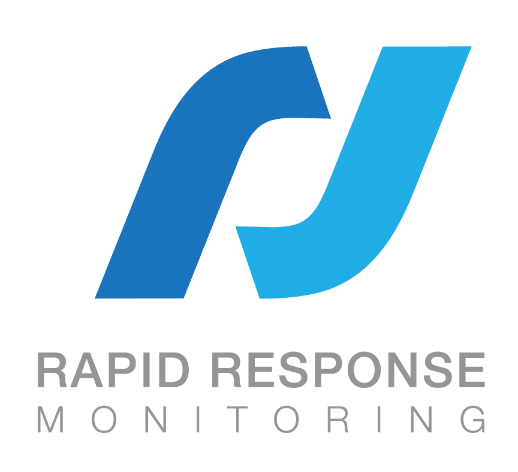

Hello! My name is Franz Gregor Ignacio, a professional with ACE and BSIS Guard certifications and a focus on career goals toward roles in the technical support or data analysis sectors. I am deeply committed to the protection and integrity of digital infrastructure, drawing from a strong foundation in physical security and a methodical, detail-oriented mindset. In addition to this, I have recently completed my Bachelor of Science in Computer Science w/ Concentration in Information Security at Southern New Hampshire University, where I graduated Cum Laude.
In addition to my technical experience, I have held leadership roles, including serving as the president of the Chess Club, which fostered my ability to think strategically and manage complex challenges. Outside of professional pursuits, I am an avid gamer and creative writer, actively developing a game that merges narrative design, gameplay mechanics, and modular system architecture.
Projects
-
Python Game Artifact:
View on GitHub
A Python-based game with database integration and customizable gameplay systems, to further showcase algorithms and data structures on top of database integration.
-
Computer Graphics Project:
View on GitHub
A C++ OpenGL project demonstrating 3D rendering techniques with a scene graph and shader-based enhancements, including procedural generation and scene management. This was further enhanced with ray-tracing and hit-detection elements.
- Portfolio Website: (You're currently on this one!)
Contact
Have a question, opportunity, or project in mind? Send me a message below.
Resume
Professional Summary
Detail-oriented cybersecurity professional with ACE and BSIS Guard certifications, a background in physical security, and a passion for protecting systems and users. Strong foundation in incident response backed by real-world experience in healthcare security operations.
Certifications
- Alarm Company Employee (ACE) Certification – California
- BSIS Guard Card – California Bureau of Security and Investigative Services
Technical Skills
- Languages: Python, C++, Java, HTML/CSS, JavaScript
- Tools: Wireshark, Nmap, Burp Suite, Git/GitHub, MongoDB, Unity, OpenGL
- Concepts: Penetration Testing, Threat Modeling, Secure Network Architecture, Game Systems Design
Work Experience

Customer Care Representative – Rapid Response Monitoring
Corona, CA · 2024–Present
Serve as a frontline support specialist within a national security monitoring company, providing assistance to clients regarding alarm events, account inquiries, and service continuity. This role demands a strong sense of urgency, excellent communication skills, and the ability to multitask across proprietary systems while maintaining accuracy and empathy. Demonstrated resilience under pressure, conflict de-escalation ability, and active collaboration with dispatch and technical teams to ensure rapid, precise responses to high-stakes scenarios.
Security Officer – Corona Regional Medical Center (Securitas)
Corona, CA · 2022–2024
Monitored hospital surveillance systems and enforced safety protocols across high-traffic medical environments. Consistently remained calm and observant during emergencies, prioritizing patient and staff safety with a professional and composed demeanor. Gained deep experience in situational awareness, clear reporting, and adaptive decision-making. Developed empathy, discretion, and conflict resolution skills while navigating emotionally charged situations with professionalism.
Education
B.S. in Computer Science w/ Concentration in Information Security
Southern New Hampshire University
Riverside, CA
Graduated: August 2025
Honors:
- President’s List: Spring 2024
- Dean’s List: Fall 2023, Summer 2024
- Honor Roll: Fall 2023 (23EW1, 23EW2), Spring 2024 (24EW3, 24EW4), Summer 2024 (24C-4, 24C-5), 2025 (25C-1, 25C-2)
- Honor Roll: Cum Laude
Relevant Coursework:
- Cybersecurity & Policy: Cybersecurity Foundations, Computer Systems Security, Software Security, Network Security
- Network & Infrastructure: Computer Networking, Intro to Computer Networks, Client/Server Systems
- Software Engineering: Software Development Lifecycle, Software QA & Automation, Full Stack Development, Mobile Architecture
- Computer Science Core: Data Structures, Discrete Structures, Operating Systems, Assembly & Machine Organization
- Graphics & Visualization: Computer Graphics, Visualization Systems
- Mathematics: Applied Linear Algebra, Calculus I–III, Differential Equations, Statistics
Computer Engineering Coursework
University of California, Riverside
Riverside, CA
August 2018 – September 2021
Completed foundational coursework in embedded systems, logic design, operating systems, engineering analysis with MATLAB, assembly language, and data structures. Developed a strong grounding in low-level software and system-level hardware interfacing.